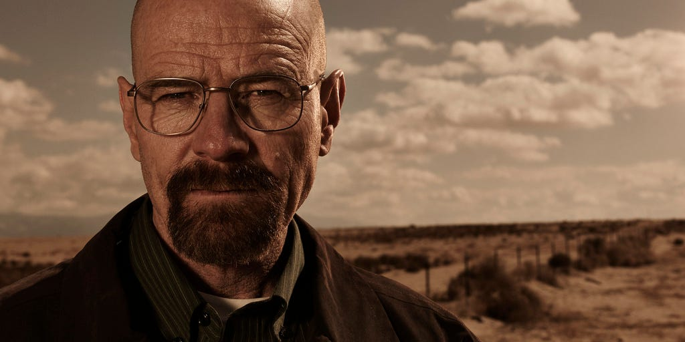
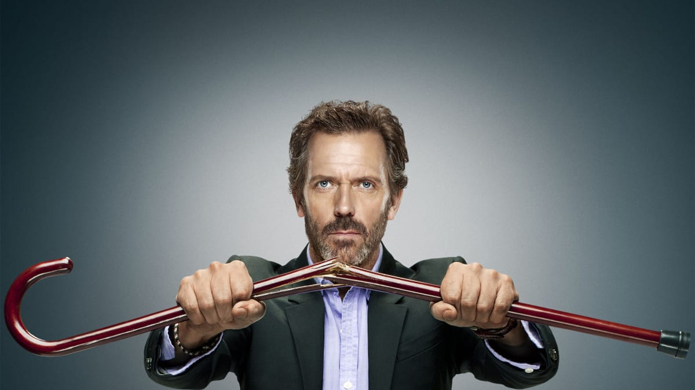

I will mention my top 3 characters in the history of TV:
- Dexter:

- Walter White aka (heisenberg): 
- House: 
To speak about dexter, I need an essay😅. This is my number 1 character of all time.
This character touched me from inside my heart. and I was agreeing most of the time with him.
It's not perfect, but I liked how I felt that I shared some thoughts with it.
This one, he is 100% perfect and pure as his work 😁(if you know what I mean!)
The way the story of walter white is told is simply perfect, I find him as a lesson and even the decisions he makes are all excused,
becasue he was right with every single thing he did even if it's bad.
Now, this man I consider him as a professor in life, he has his own thoughts and no one can understand them unless you were him
**All People Li** this sentence can summrize our life. we all do lie, but for the sake of something we need.